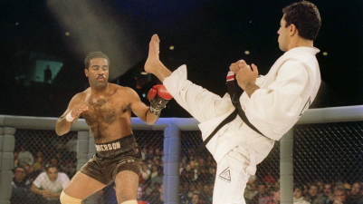

Geschiedenis
De UFC startte in 1993 als een toernooi om 's werelds beste vechter te vinden, ongeacht in welke stijl die zijn oorsprong vond. Dit idee was gebaseerd op de Brazilliaanse vechtsport vale tudo. De bedoeling was om het evenement eenmalig te houden, maar door het succes van de eerste editie volgden er meer. Hoewel er een beperkt aantal regels gold, waren UFC-wedstrijden vaak bruut en gewelddadig. De eerste UFC-gevechten waren eerder spectaculair dan sportief, wat leidde tot beschuldigingen van bruutheid en "menselijke hanengevechten" door tegenstanders. Politieke druk leidde ertoe dat de UFC publiekelijk verdween en ondergronds ging.
Bekendheid bij het grote publiek verwierf de UFC in 2004 met een realityserie, genaamd The Ultimate Fighter. Hierin streden zestien MMA-vechters, verdeeld over twee gewichtsklassen, onder elkaar om een contract in de UFC te kunnen bemachtigen. Ze verbleven in een villa en hadden geen contact met hun vrienden of familie. Ze werden getraind en gecoacht door bekende UFC-vechters en enkele andere professionele trainers. De finale van deze competitie gaf de doorslag wat betreft de bekendheid van de UFC.
Casino-ondernemers en broers Frank Fertitta III en Lorenzo Fertitta kochten in 2001 voor twee miljoen dollar 81% van de eigendomsrechten van UFC en begonnen het sportpromotiebedrijf Zuffa om die in onder te brengen. Ze gingen daarbij in zee met Flash Entertainment dat 10% van de aandelen heeft en zakenman Dana White (9%), die tevens voorzitter en woordvoerder van de organisatie werd. De UFC omarmde striktere regelgeving, werd onderhevig aan regelgevende sportcommissies en profileerde zich als een legitiem sportevenement. Het no holds barred-predicaat schudde men van zich af en men ging verder onder de noemer mixed martial arts (MMA). Zo stond de UFC op uit haar politieke isolement, werd meer sociaal geaccepteerd en herwon haar positie binnen de wereld van pay-per view wereld. Er werd meer aandacht besteed aan promotie en met een overeenkomst met een kabelexploitant op zak en de legalisatie van MMA in Californië, mocht de UFC zich langzaam maar zeker op een toenemende mate van populariteit en media-aandacht verheugen.